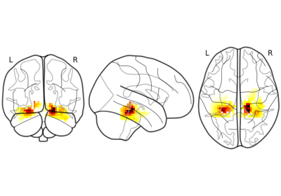
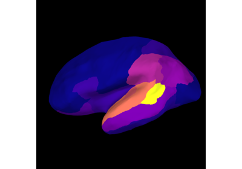
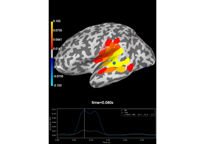
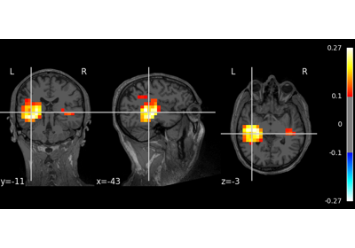

Source-Level RSA#
These examples showcase how to perform RSA on source-level data.

Source-level RSA using a searchlight on fMRI data
Source-level RSA using a searchlight on fMRI data

Source-level RSA using ROI's

Source-level RSA using a searchlight on surface data
Source-level RSA using a searchlight on surface data

Source-level RSA using a searchlight on volumetric data
Source-level RSA using a searchlight on volumetric data